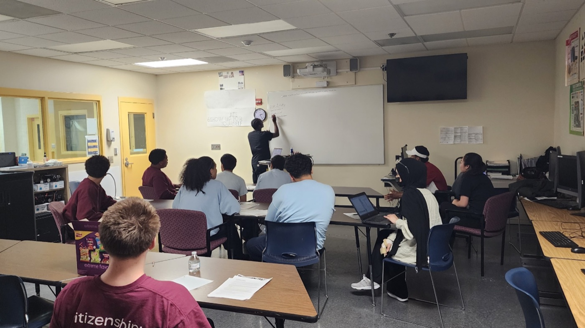
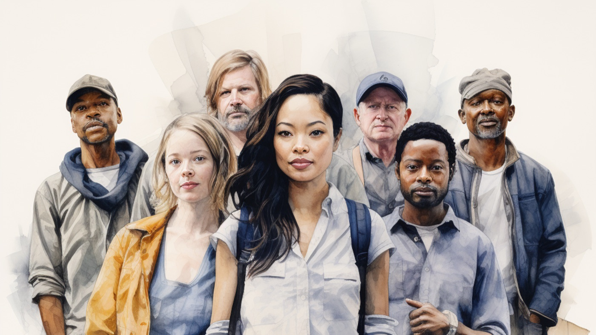
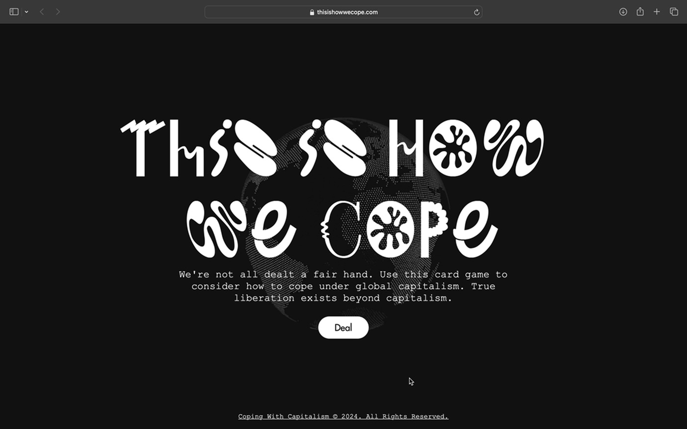
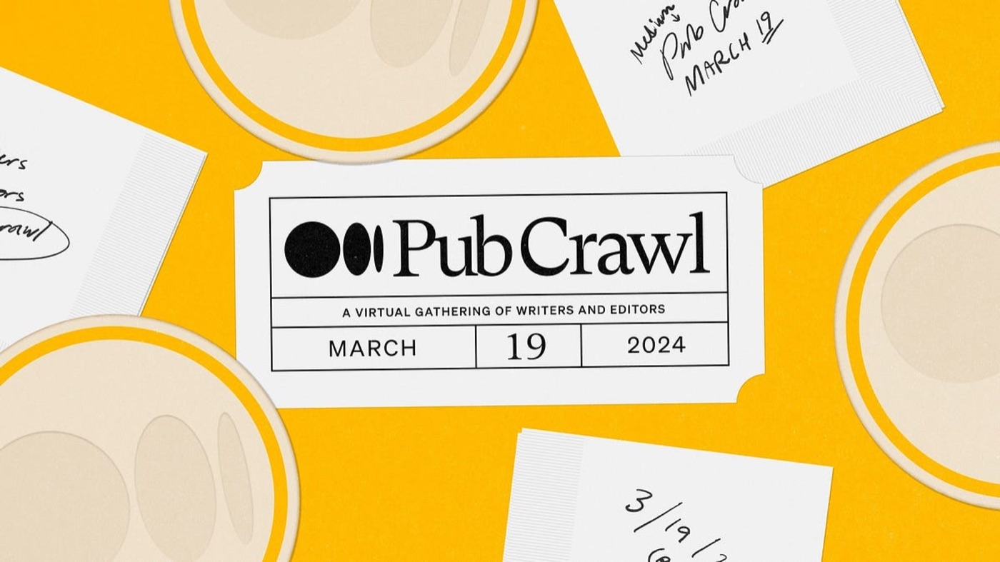
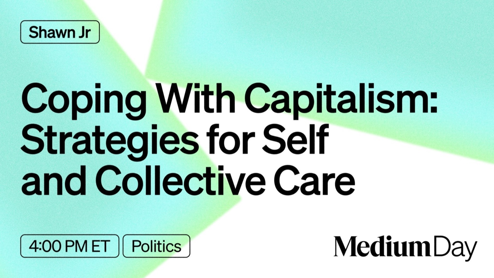
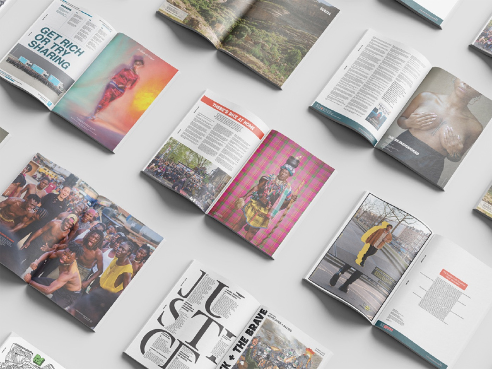
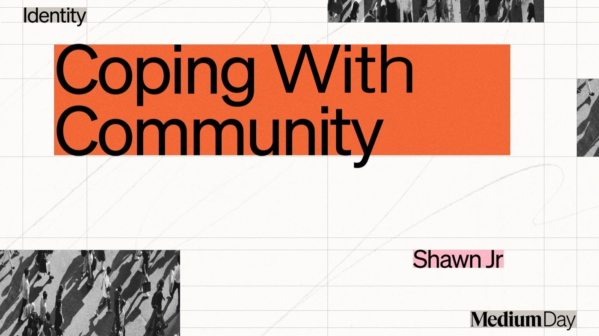

Life under capitalism, state by state.
The why
Exploitation is a daily reality under capitalism, a system that prioritizes profit over people and leaves lasting harm on bodies, minds, and communities. Mutual care is how we begin to heal. Coping With Capitalism exists to offer clear and accessible paths to self and collective care.
Status
On hiatus.
From 2023 to 2025, a community came together to do meaningful work around mutual care. Now, Shawn Jr is considering where to take this initiative next. Past projects are below.
- 2023Launched
- 2023 – 2025Nine initiatives
- 2025Paused
- NowDeciding what’s next
Past projects
01 / 09
Medium publication

Design thinking workshop with incarcerated youth

Coping with Capitalism interview series

This is how we cope, card game

Publication editors panel discussion with Medium

Medium Day 2024

Guest editor for Paper Zero
